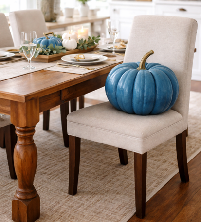
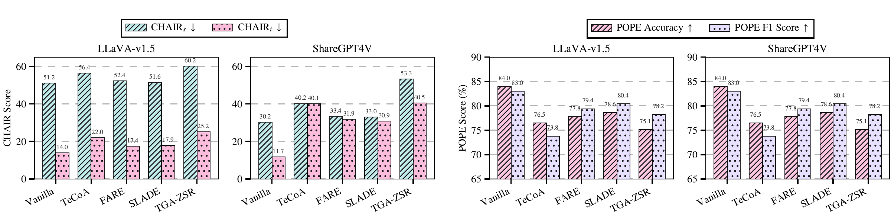
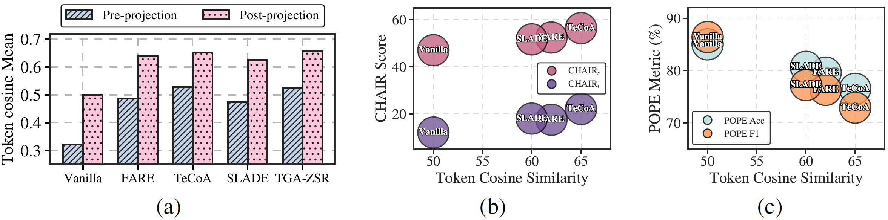
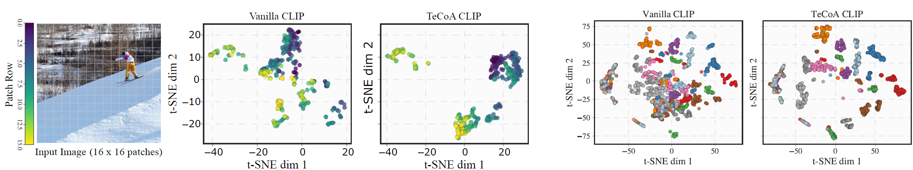

Robust vision encoders raise inter-token cosine similarity by up to 38%: tokens from distinct spatial regions become nearly interchangeable. We call this spatial token homogenization. Drag α to homogenize the tokens yourself (Eq. 4) and watch the decoder abandon what it sees for what it expects.
Each point is a projected visual token, colored by its spatial region (sky, snow, skier, trees). \(\tilde{z}_i(\alpha) = (1-\alpha)\,z_i + \alpha\,\bar{z}\)

The image shows a blue pumpkin. As tokens homogenize, probability shifts to the language prior: pumpkins are “supposed to be” orange.
Robustness and accurate alignment with visual content are fundamental to the reliable deployment of large vision-language models (LVLMs). In this work, we uncover a previously overlooked trade-off: improving adversarial robustness can inadvertently increase hallucination in LVLMs. Through extensive evaluations on both open-ended generation and discriminative benchmarks, we reveal that adversarially trained LVLMs consistently produce outputs that are less aligned with the visual input, despite their improved robustness. To understand this trade-off, we analyze the visual token embeddings of robust encoders and find that adversarial training increases inter-token similarity by up to 38%. We refer to this phenomenon as spatial token homogenization. We further demonstrate that spatial token homogenization degrades visual information and amplifies the decoder's reliance on language priors. Motivated by our findings, we propose Homogenization-Aware Latent Steering (HALS), a training-free inference-time method that steers decoder hidden states away from homogenization-induced hallucination without modifying the robust vision encoder. Extensive experiments across five hallucination benchmarks show that HALS consistently outperforms existing hallucination mitigation methods on robust LVLMs, reducing CHAIRS by 31.3 points on average, improving POPE accuracy by 2.6 points, and achieving a 30.6% reduction in hallucination on AMBER. Moreover, robustness evaluations confirm that HALS preserves adversarial performance, demonstrating that robust LVLMs can be made visually grounded without sacrificing their performance.
Adversarially trained encoders (TeCoA, FARE, SLADE, TGA-ZSR) homogenize visual tokens, erasing the fine-grained detail the decoder needs to stay grounded.
HALS steers decoder hidden states away from prior-driven generation, outperforming VCD, OPERA, PAI, VTI, and VISTA across every robust encoder.
Clean and robust accuracy on COCO and OKVQA under APGD attack are preserved — grounding is restored without touching the robust encoder.



Texture and color — precisely the local cues that distinguish one patch from its neighbors — are dampened to achieve perturbation invariance.
Mean pairwise cosine similarity rises sharply, before and even more after cross-modal projection. In t-SNE, tokens from distinct regions collapse into a single compact cluster. Higher similarity tracks higher CHAIR and lower POPE, and a larger training budget (ε = 4/255 vs 2/255) homogenizes more aggressively.
With less discriminative visual evidence, generation drifts toward what is statistically plausible rather than visually true — a blue pumpkin becomes orange, empty tables acquire spoons.
HALS is training-free and leaves the robust vision encoder untouched. It targets the decoder-side symptom directly, in three steps:
For each calibration image, generate a grounded caption from clean tokens (\(\alpha = 0\)) and a hallucination-prone caption from homogenized tokens (\(\alpha_h = 0.7\), chosen because it reproduces the token cosine similarity of robust encoders).
For each calibration pair, contrast the decoder hidden states of the grounded caption \(c_k^{+}\) and the hallucinated caption \(c_k^{-}\) under the same homogenized tokens \(Z_k^{\alpha_h}\), then take the first principal direction across \(K = 200\) pairs:
Here \(h_{\ell,t}\) is the hidden state of the last text token at decoder layer \(\ell\), so it encodes the full preceding context; PCA removes example-specific noise and yields a generalized layer-wise direction \(d_\ell\).
Inject the pre-computed direction \(d_\ell\) into the decoder hidden states during autoregressive generation, scaled by steering strength \(\lambda\) — one vector, computed once, applied at 10.2 tokens/s (the fastest among compared mitigation methods):
No vision-encoder changes, no parameter updates. \(\lambda = 1.2\) for open-ended generation (CHAIR, AMBER, MMHal-Bench) and \(\lambda = 0.2\) for discriminative tasks (POPE, MME).
Steering vectors transfer across LVLMs with compatible decoder depth (LLaVA-v1.5 → ShareGPT4V; LLaVA-Next → MiniGPT-4), and HALS also mitigates hallucination under transformation-based defenses (TTC, AOM) and even under the vanilla encoder.
Across CHAIR, POPE, AMBER, MMHal-Bench, and MME — and across LLaVA-v1.5, LLaVA-Next, ShareGPT4V, and MiniGPT-4 — the same pattern holds: robust encoders degrade the vanilla baseline, and HALS recovers and surpasses it.
CHAIRS ↓ and POPE accuracy ↑ on LLaVA-v1.5, baseline vs. HALS.
| Encoder | CHAIRS ↓ (base) | CHAIRS ↓ (HALS) | POPE Acc ↑ (base) | POPE Acc ↑ (HALS) |
|---|---|---|---|---|
| Vanilla CLIP | 46.4 | 15.4 | 84.8 | 85.2 |
| SLADE | 50.6 | 16.0 | 78.6 | 82.2 |
| FARE | 52.4 | 13.6 | 77.8 | 80.2 |
| TeCoA | 56.4 | 19.8 | 76.5 | 79.3 |
| TGA-ZSR | 60.2 | 23.2 | 75.1 | 77.4 |
HALS outperforms DOLA, VCD, PAI, OPERA, VTI, and VISTA on CHAIR across every robust encoder, with average CHAIRS reductions of 27.9 (SLADE), 31.3 (FARE), and 34.6 (TeCoA) points.
CHAIR ↓, Hallucination ↓, and Cognition ↓ on LLaVA-v1.5, baseline → HALS.
| Encoder | CHAIR ↓ | Hal ↓ | Cog ↓ |
|---|---|---|---|
| Vanilla CLIP | 11.2 → 7.3 | 37.6 → 19.5 | 7.2 → 4.2 |
| SLADE | 13.9 → 9.6 | 40.6 → 24.9 | 7.3 → 4.8 |
| FARE | 13.5 → 9.4 | 36.4 → 22.8 | 6.9 → 4.5 |
| TeCoA | 16.6 → 12.4 | 48.7 → 28.6 | 7.6 → 4.9 |
On ShareGPT4V + TeCoA, where hallucination is most severe, HALS cuts CHAIR from 41.1 to 22.4 (−18.7) and Hal from 73.0 to 17.3 (−55.7). The Cog improvement indicates HALS also reduces hallucinations driven by common scene-level priors.
ShareGPT4V across vision encoders, baseline → HALS.
| Encoder | MMHal Avg. ↑ | MMHal Hall. Rate ↓ | MME Score ↑ |
|---|---|---|---|
| Vanilla CLIP | 2.35 → 3.05 | 0.57 → 0.46 | 615.6 → 635.2 |
| SLADE | 2.05 → 2.78 | 0.61 → 0.46 | 598.4 → 612.4 |
| FARE | 2.01 → 2.66 | 0.62 → 0.48 | 582.6 → 616.6 |
| TeCoA | 1.98 → 2.58 | 0.63 → 0.50 | 552.6 → 590.6 |
On average, HALS improves the MMHal-Bench score by 0.66 points, reduces the hallucination rate by 0.14, and improves MME by 28.7 points — outperforming VTI and VCD across all robust encoders.
Clean / robust performance on COCO (CIDEr) and OKVQA (accuracy) under APGD attack (ε = 4/255), LLaVA-v1.5.
| Encoder | COCO Clean ↑ | COCO Robust ↑ | OKVQA Clean ↑ | OKVQA Robust ↑ |
|---|---|---|---|---|
| TeCoA | 115.6 | 79.5 | 44.4 | 20.5 |
| TeCoA + HALS | 116.3 (+0.7) | 79.5 (+0.0) | 44.4 (+0.0) | 20.3 (−0.2) |
| FARE | 123.5 | 86.4 | 46.4 | 22.1 |
| FARE + HALS | 123.4 (−0.1) | 87.2 (+0.8) | 46.5 (+0.1) | 22.1 (+0.0) |
| SLADE | 124.0 | 94.6 | 48.4 | 23.4 |
| SLADE + HALS | 125.2 (+1.2) | 94.0 (−0.6) | 48.4 (+0.0) | 23.4 (+0.0) |
Changes are negligible across all encoders — hallucination is reduced without sacrificing the adversarial robustness the encoders were trained for.
CHAIRS ↓ and POPE accuracy ↑ under test-time defenses (TTC, AOM) with MiniGPT-4, a non-CLIP-based LVLM.
| Defense | Method | CHAIRS ↓ | CHAIRI ↓ | POPE Acc ↑ | F1 ↑ |
|---|---|---|---|---|---|
| None | — | 36.8 | 14.5 | 76.8 | 76.3 |
| TTC | VTI | 38.1 | 15.5 | 75.9 | 74.7 |
| HALS | 28.2 | 14.7 | 75.5 | 75.8 | |
| AOM | VTI | 37.4 | 14.7 | 76.4 | 74.9 |
| HALS | 31.6 | 14.0 | 76.4 | 75.3 |
HALS also holds up beyond greedy decoding — it reduces CHAIR under nucleus sampling and beam search alike — and is the fastest mitigation method compared, at 10.2 tokens/s, since the steering vector is pre-computed once rather than extracted per input. Full tables and ablations (steering strength λ, training budget ε, decoding strategies, qualitative examples) are in the paper.
@inproceedings{anonymous2026robust,
title = {Do Robust {LVLMs} Hallucinate More? Uncovering
Robustness-Induced Hallucination in Large
Vision-Language Models},
author = {Anonymous},
booktitle = {Advances in Neural Information Processing Systems},
year = {2026},
note = {Under review}
}